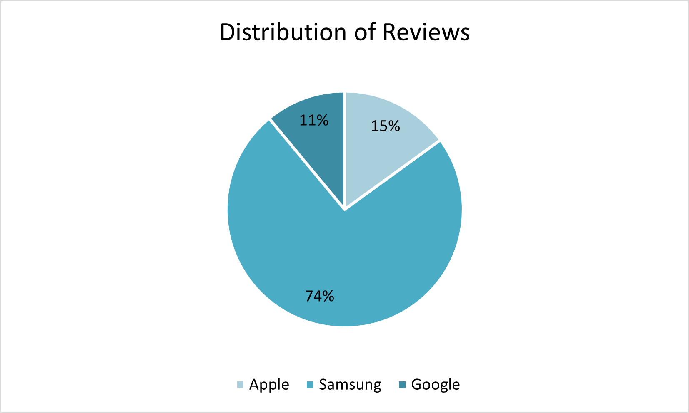
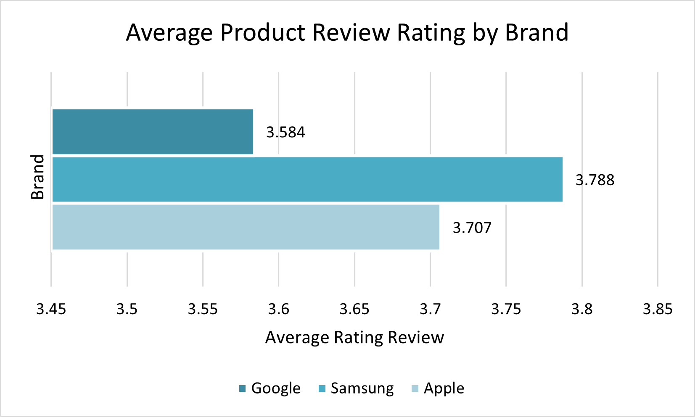
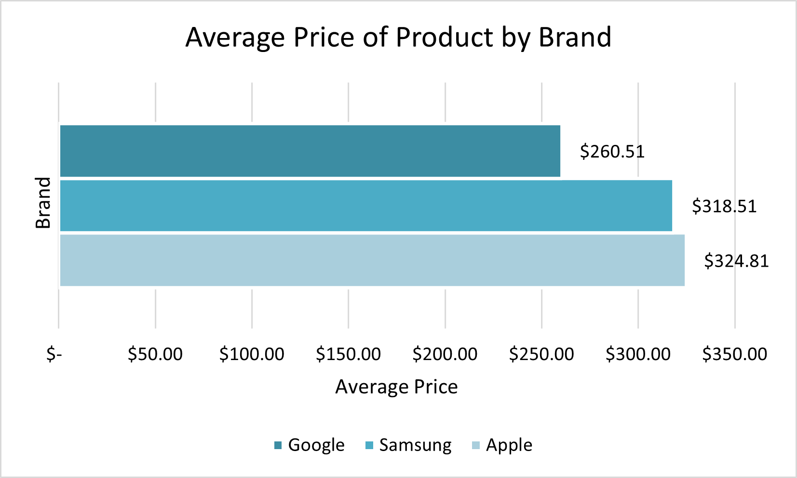
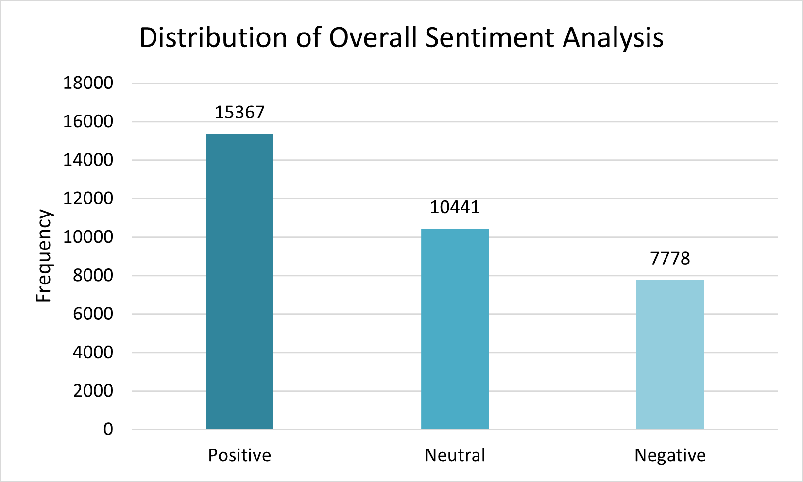
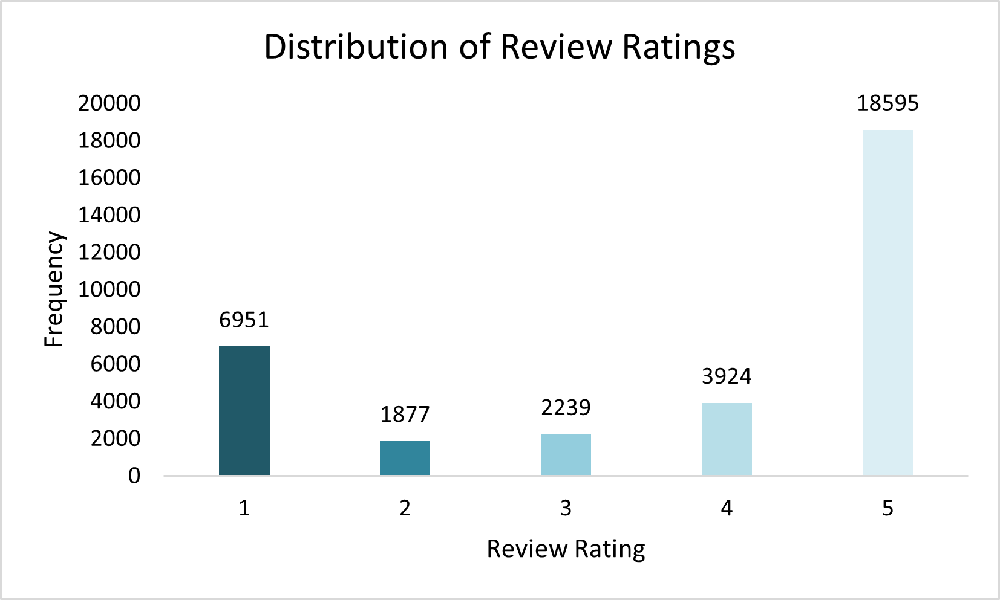
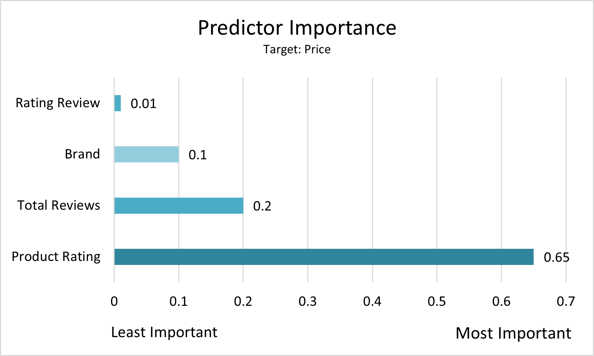

Amazon Product Review Sentiment Analysis
Predictive Analytics Project
Purpose
The purpose of this project is to mine Amazon product text reviews further to draw opinions or sentiments from the text reviews. As data analysts for the company, our goal is to find interesting relationships between key business variables which will help Amazon’s Product Managers determine which cell phone brands to carry and at what price point
Data Overview
The original data was comprised of two different tables that we found on Kaggle.com and used an inner join in python to combine. The first table was a list of cell phone products sold by Amazon with information regarding the brand of the product, the price of the product, the total reviews of a product, and the average rating of the product. The second table was a list of reviews from Amazon customers who purchased products listed in the products table. It is important to point out the difference between the rating_review variable, which is the rating given by the review, and the rating_product variable, which is actually the average rating of the product based on all reviews.
Part I: Descriptive Analysis
Our data is comprised of reviews from three different brands: Apple, Google, and Samsung. We are analyzing a total of 33,571 reviews, but it is important to note that more than half of the reviews are for the brand Samsung. See Figure 1 in the appendix for a pie chart illustrating the distribution of reviews by brand. Samsung is also the brand with the highest overall average rating at 3.9, however Apple and Google are also very close. We can see Apple, Google, and Samsung all have an average product review rating in the range of 3.5 to 4, but none are above a rating of 4. See Figure 2 in the appendix for a column chart illustrating the distribution of average product review ratings by brand. Google has the lowest average price for products at $260, and it also has the lowest overall average product rating. Google is the only brand to have an average product price below $300. See Figure 3 in the appendix for a column chart illustrating the distribution of average price of product by brand.
Part II: Sentiment Analysis
After completing the descriptive analysis, we performed sentiment analysis with the reviews. Because the reviews in our data were not labeled, to get the sentiment score of each review we developed our own scoring. For each review, we first identified all the positive categories and all negative categories. Then we calculated the sentiment score to categorize the reviews as Positive, Negative, or Neutral. We found that most of the reviews were positive, followed by neutral and then lastly negative. We found it interesting that more reviews were categorized as Neutral rather than Negative because we anticipated more polar reviews (Positive or Negative). See Figure 4 in the appendix for a column chart illustrating the distribution of overall sentiment analysis. By looking at the distribution of review ratings we can see that most of the reviews in the data had a review rating of 5. By comparing these distributions, we are able to verify that our sentiment analysis generally confirms the data. See Figure 5 in the appendix for a histogram illustrating the distribution of the review score ratings.
Part III: Predictive Models
After completing the sentiment analysis, we built and performed two prediction models to predict the price of an Amazon products with all relevant inputs in our dataset. Our first prediction model did not include sentiment variables and had a mean absolute error of 69.7. The average review score rating for a product had the most important predictor importance followed by the total amount of reviews, and the brand. See figure 6 in the appendix for a column chart illustrating the predictor importance for model 1. Our second prediction model did include sentiment variables and had a mean absolute error of 66.636. The average review score rating for a product had the most important predictor importance followed by the total amount of reviews, and the brand. See figure 7 in the appendix for a column chart illustrating the predictor importance for model 2. Based off the values of the mean absolute error we can determine that the prediction model that did include sentiment variables outperformed the model the did not. It is also important to note that we partitioned the data to a 60% training set and a 40% testing set and did not notice any overfitting with the model.
Reccomendations
Based off the results of the prediction models we can say that the overall rating for a product is the most important when trying to predict price. Amazon Product Managers need to be diligent in monitoring the overall average rating review for their products. One individual review will not have a huge impact when trying to predict price, but the overall average review score will. The second most important predictor was the total amount of reviews for a product, so Amazon Product Managers need to try to incentivize people to leave more reviews because it will help determine the price point of the product. We have also identified a few opportunities to improve upon our research. If we had more information about the products like the product category and product features, we would be able to better see the differences between different product lines. We also realized that we were trying to complete an analysis on two different scales which might be impacting our results. Moving forward we would like to try and analyze the data on multiple scales with the more detailed product information. Another way we could have improved on this study was to conduct the sentiment analysis in VADR to compare results. Similarly, we could have conducting linear regression models to compare them the CHAID Tree models that we used in this study.
Appendix
Figure 1 – Distribution of Reviews by Brand 
Figure 2 – Distribution of Average Product Review Rating by Brand 
Figure 3 – Distribution of Average Price of Product by Brand 
Figure 4 – Distribution of Overall Sentiment Analysis 
Figure 5 – Distribution of Review Ratings 
Figure 6 – Model 1 Predictor Importance (without Sentiment) 
Figure 7 – Model 2 Predictor Importance (with Sentiment)